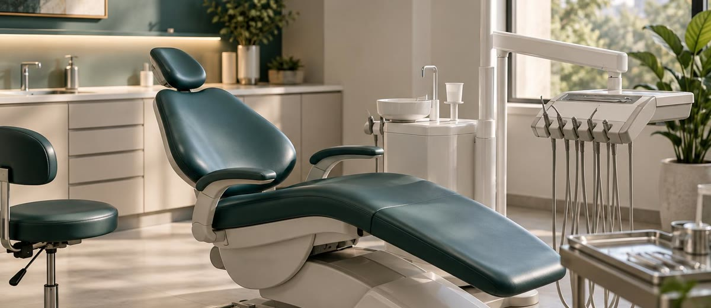

Tiempo entre pacientes: cómo planificar la agenda dental

El paciente ya está en recepción, pero el gabinete todavía no puede recibir al siguiente. En la agenda, una cita termina justo donde empieza la otra. En la clínica, entre ambas hay trabajo.
Recoger, limpiar y preparar no ocurre fuera del reloj. Si ese tiempo no tiene sitio en la planificación, alguien lo acaba pagando: el paciente que espera, la auxiliar que corre o el profesional que termina tarde.
No hace falta empezar comprando otro programa. Hace falta comprobar qué significa realmente la duración de una cita en tu clínica. ¿Incluye todo el uso del gabinete o solo la atención al paciente?
1. Separa el tiempo clínico del tiempo de ocupación del gabinete
Una cosa es cuánto dura la intervención y otra cuándo vuelve a estar disponible el espacio. Confundirlas hace que la capacidad parezca mayor de lo que es. Después llegan los retrasos y se atribuyen a una supuesta falta de rapidez del equipo.
Para observar el proceso, conviene distinguir tres momentos:
- Preparación: tareas necesarias para que el gabinete y los materiales estén listos para esa atención.
- Atención: tiempo de uso con el paciente, incluida la explicación que corresponda, no solo el procedimiento.
- Cambio: trabajo posterior hasta dejar el gabinete disponible para la siguiente cita según los protocolos del centro.
Estos bloques no siempre se suceden de forma idéntica. Parte de la preparación puede realizarse antes, mientras otra persona atiende, si existen recursos y condiciones para hacerlo. Por eso no conviene sumar tiempos de distintas personas sin comprobar qué tareas se solapan y cuáles requieren el mismo espacio.
La agenda debe reflejar la disponibilidad real del gabinete. La planificación del equipo, además, debe contemplar el trabajo que se realiza fuera de él.
2. Mide varias jornadas sin convertirlo en una carrera
Un día especialmente tranquilo no sirve como patrón para todos los demás. Tampoco una jornada con una incidencia excepcional. El registro inicial debe recoger variedad de tratamientos y condiciones, no buscar el mejor tiempo posible.
Puede bastar una hoja de observación con el tipo de cita, el tiempo previsto, el inicio real, la salida del paciente y el momento en que el gabinete queda preparado. Añade una causa breve cuando haya una desviación: material pendiente, atención más compleja o interrupción, por ejemplo.
No necesitas nombres de pacientes ni información clínica identificable para estudiar estos tiempos. Tampoco una clasificación pública de quién tarda más. El objetivo es ajustar la organización, no premiar a quien consigue terminar antes.
El tiempo de limpieza y preparación no es un hueco improductivo. Es parte del trabajo necesario para atender.
La revisión corresponde a quienes conocen el proceso asistencial. Un responsable de agenda no debe reducir unilateralmente los tiempos necesarios ni alterar los protocolos para que entren más citas.
3. Un ejemplo de capacidad que solo existe sobre el papel
Imagina, como ejemplo hipotético, seis citas consecutivas a las que se asignan treinta minutos de atención. Si cada una requiere además diez minutos de cambio de gabinete que no están incluidos, has omitido una hora de trabajo del espacio. Es una ilustración aritmética, no una duración recomendada ni un dato del sector.
Si los treinta minutos ya incluyen ese cambio, añadirlo otra vez sería otro error. Antes de modificar nada, hay que aclarar qué representa cada bloque del programa.
La respuesta tampoco consiste siempre en ampliar todas las citas por igual. Quizá ciertos procedimientos necesitan una preparación diferente. Quizá falta material en un punto concreto. O quizá una misma persona tiene asignadas dos tareas simultáneas en gabinetes distintos.
Cada situación exige una corrección diferente. Lo importante es no prometer capacidad contando con que el equipo resolverá cada incompatibilidad a base de correr.
4. Ajusta la agenda y comprueba el resultado
Con el registro delante, define duraciones por tipos de cita y criterios para los casos que necesitan más tiempo. Recepción debe saber cuándo puede asignar un bloque habitual y cuándo consultar al profesional responsable.
Después prueba el ajuste durante varias jornadas comparables. Revisa el inicio puntual de las citas, la espera del paciente y la hora real de cierre. Observa también si aparecen tareas pendientes que antes se resolvían entre visitas: mejorar un indicador trasladando trabajo al final del día no resuelve el problema.
Si persisten las desviaciones, vuelve a las causas. Un retraso por falta de material no se corrige igual que una estimación insuficiente del tiempo asistencial. Reservar margen puede ayudar, pero no sustituye resolver una incidencia repetida.
5. La puntualidad también sostiene el marketing dental
La publicidad puede conseguir una primera cita. No puede compensar indefinidamente una espera que la propia planificación provoca. La experiencia del paciente depende también de cómo se organiza lo que no ve.
Esta relación entre capacidad, gestión y experiencia conecta con Método EBA: antes de exigir más a la captación, conviene saber qué atención puede sostener la clínica.
No se trata de llenar menos por principio. Se trata de distinguir una agenda exigente de una agenda imposible. Si un trabajo es necesario para atender al siguiente paciente, necesita tiempo previsto. Aunque no aparezca como una línea en el presupuesto.